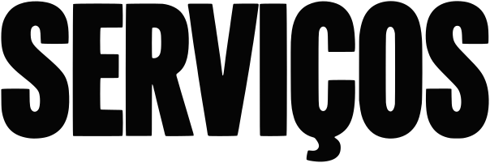
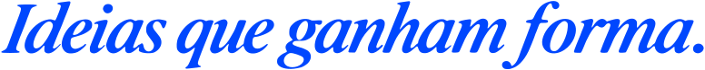
Sites, manutenção e automações para simplificar o seu dia a dia.
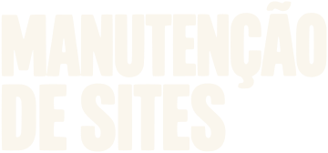
Serviços avulsos
Backup grátis incluso em qualquer serviço
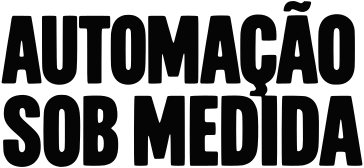
Ferramentas personalizadas
Desenvolvo ferramentas e automações
que eliminam tarefas manuais e repetitivas
em rotinas administrativas, principalmente
de RH e Departamento Pessoal.
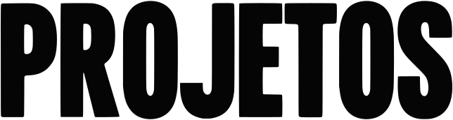
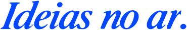
Sites feitos sob medida para clientes e templates prontos
para adaptar à sua marca e publicar em poucos dias.
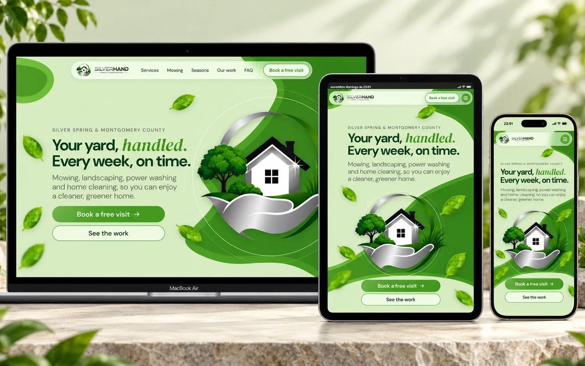
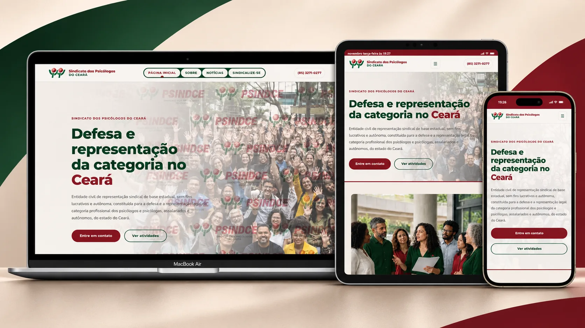
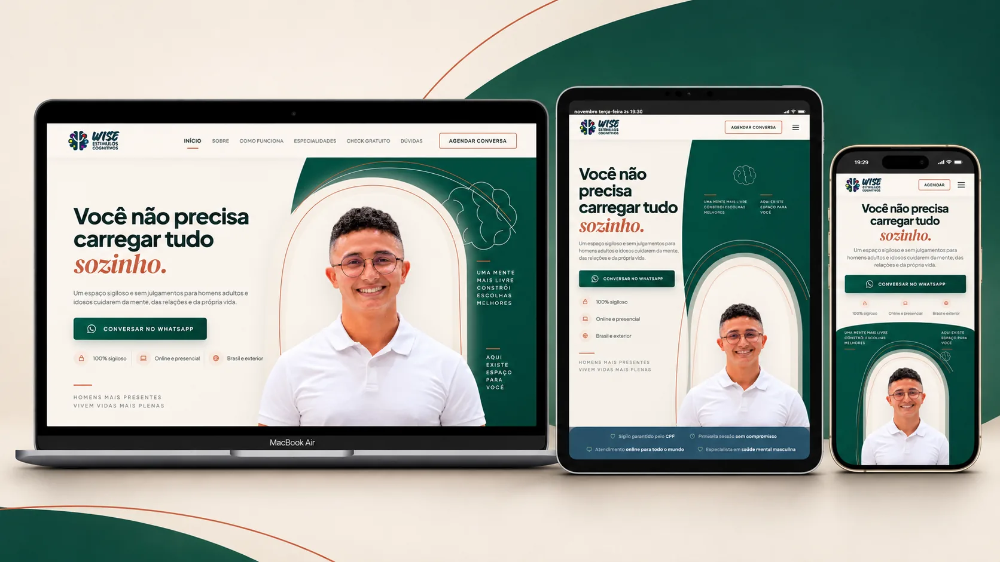